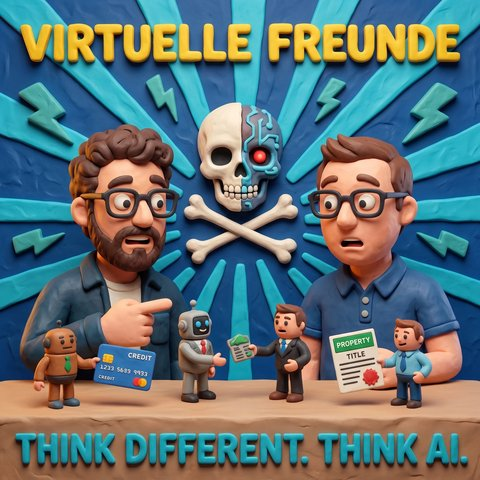

Virtuelle Freunde
Read in EnglishThemen Modelle und AnbieterKI-Agenten
33 Sekunden zur Folge, bevor du liest.
Worum es geht
Warum KI ein Gesicht bekommt, und warum Mark dafür ein Essen zahlt
Diesmal sitzen Mark und Jens nicht über Riverside zusammen, sondern in Karlsruhe am selben Tisch, draußen, mit Burger und Radler. Der Anlass ist eine verlorene Wette. In der vorigen Folge hatte Mark über Metas kleines Gerät für den Schlüsselbund gelacht und versprochen, Jens zum Essen einzuladen, falls darüber bis Weihnachten noch jemand redet. Es hat keine zwei Wochen gedauert.
Jens erklärt, was Metas Assistent Muse heute schon kann, auch wenn er bisher nur in den USA und in Kanada verfügbar ist. Muse bekommt eine eigene E-Mail-Adresse und ist auch über WhatsApp erreichbar. Man schickt ihm also Dinge so, wie man sie Freunden schickt, über die normale Teilen-Funktion. Er läuft in der Cloud weiter, wenn der Rechner aus ist, und bringt zum Start rund 1.500 Integrationen mit, Expedia etwa, sodass er auch eine Reise buchen kann. Jens hält es für einen geschickten Zug, die KI aus der Welt der Modellnummern zu holen. Während man bei anderen Anbietern ständig über Versionen redet, bleibt Muse einfach Muse, und die Modelle dahinter dürfen wechseln.
Mark rudert an einer Stelle zurück. Den spielerischen Teil findet er weiter albern, die Personifizierung aber nicht. Ein System, das auf Sprache ausgelegt ist statt auf ein Textfeld, verhält sich anders. Das kennt er aus dem eigenen Harness in der Firma: Wer per Sprache arbeitet, bekommt keine Tabellen vorgelesen. Dazu kommt der Fingerabdrucksensor am Gerät, der Käufe bestätigen kann und die Aufnahme erst startet, wenn man ihn berührt. Jens findet das geschickter gelöst als bei Geräten, die versehentlich mithören.
Dann wird es verspielt. Füttern heißt beim Tamagotchi von heute vermutlich Abo, und ein Begleiter, der um Aufmerksamkeit kämpft, wird jammern, wenn man ihn liegen lässt. Was passiert, wenn zwei dieser Figuren mit eigener Persönlichkeit nebeneinander liegen? Mark sieht schon die Szene wie aus Toy Story: der Piraten-Muse, der den Feen-Muse über ein Lineal auf die Planke schickt. Jens beobachtet in seinen Feeds, wie viele Leute gerade eigene kleine Geräte mit Avataren bauen. Für ihn ist die Wette damit dreifach gewonnen.
Der zweite Teil gilt OpenAIs Dots, kleinen Figuren, die auf dem Rechner leben und für einzelne Aufgaben entstehen, für eine Fehlermeldung, eine Mail, eine Excel-Datei. Mark erzählt von einer Vorführung am selben Morgen, bei der ein kleiner Avatar während einer Präsentation auf die Folie zeigte, über die gerade gesprochen wurde. Viele kleine Agenten auf dem Bildschirm hält er weiter für einen Fehler, ein orchestrierender Agent sei besser. Die zeigende, unterstützende Funktion aber sei echte Hilfe und keine Spielerei.
Jens ordnet das historisch ein. Der Personal Computer war schon der persönliche Zugang zu den großen Rechnern, und die Science-Fiction hatte ihre Assistenten längst: Bit aus Tron, der nur Ja und Nein sagen konnte, Professor Simon bei Captain Future, die Sprachsteuerung bei Star Trek, Data. Und Karl Klammer. Die Idee dahinter sei gut gewesen, nur die Umsetzung nicht. Marks Frage dazu: Wenn auf das komplizierte Word früher Karl Klammer die Antwort war, sind es heute Muse und Dots?
Gutes Design lässt die Technik verschwinden, sagt Jens. Ob Text, Sprache oder eine Darstellung gerade passt, soll die KI entscheiden, und der Avatar hat die Chance, zum Hüter dieser Schicht zu werden, egal ob am Telefon, am Rechner oder vor einem großen Display. Mark hält dagegen, dass all das Tokens verbrennt, und fragt, ob Tokens am Ende eine Grundversorgung werden wie Strom, Gas und Wasser. Jens glaubt, dass Avatare erst einmal mehr Verbrauch bringen, weil sie mehr Menschen einen bequemeren Zugang zur KI geben, und dass Kosten und Verbrauch danach über lokale und schnellere Modelle sinken. Am Ende steht sein Bild vom virtuellen Freund, der recherchiert, bestellt, Entscheidungen vorbereitet und die Post vom Anwalt liest. Mark ergänzt die dunklere Fassung gleich mit.
Zum Schluss stellt Mark fest, dass sie sich am selben Tisch weniger ins Wort gefallen sind als sonst. Er schiebt es auf Jens' Statur.
Transkript
00:00:00Willkommen bei Think Different. Think AI., dem Podcast von Mark und Jens.
00:00:07Zwei technologieverliebte Köpfe, die nicht nur über künstliche Intelligenz reden, sondern sie leben.
00:00:14Hier gibt's klare Einordnungen, echte Praxiseinblicke und einen frischen Blick auf das, was möglich ist.
00:00:20Verständlich, kritisch und immer mit einem Augenzwinker.
00:00:24KI zum Nachdenken, zum Schmunzeln und vor allem zum Mitreden.
00:00:29Herzlich willkommen bei Think Different. Think AI. Heute sehen Jens und ich uns wieder mal in
00:00:41Person. Ich weiß nicht, dass wie viel Bier du hast. Ich weiß, dass ich das zweite Rad
00:00:45habe. Jens, schön, dass du da bist. Schön, dass ich da rein darf, Mark. Ich hoffe,
00:00:49ihr habt das gehört. Ja klar, wir haben uns hier angestoßen. Im, dürfen wir das sagen? Ja,
00:00:53wir sind im beschaulichen Karlsruhe. Ach so, ich dachte, du wolltest sagen,
00:00:56dass wir im Pratar sitzen und ob wir das jetzt werbetechnisch machen dürfen. Es gibt
00:01:00bestimmt auch noch andere leckere Burger-Schuppen,
00:01:02das wollen wir auch in keinster Weise in Abrede stellen.
00:01:05Wir wollen uns heute unterhalten darüber,
00:01:07wie KI uns in Zukunft wahrscheinlich unser Leben ändern wird.
00:01:11Und abgesehen davon, dass wir uns heute hier getroffen haben,
00:01:14damit ich den wertgeschätzten Jens auch einladen darf zum Essen.
00:01:18Oh, das wusste ich noch gar nicht.
00:01:20Ach so.
00:01:21Weil er mich ja mit dem Mews ein bisschen aus dem Boxhorn geholt.
00:01:27Werden wir uns heute über Mews und über Dots
00:01:30unterhalten. Schön, ne? Wobei die drei Monate warten wollen und ich dann erst das Essen gewinne,
00:01:37ist es jetzt keine zwei Wochen mehr und ich kriege das Essen schon gezahlt. Weil, wer damals die
00:01:45Folge nicht gehört hat, ich habe dem lieben Mark unter Wiederwille von ihm abgerungen,
00:01:51dass ich am Ende der Folge kurz über die Neuerung, der liebe Mark Zuckerberg verkündet
00:01:57Ich weiß jetzt gar nicht ganz genau, wo er unter anderem auch eine ziemlich geile neue
00:02:05VR-Brille vorgestellt hat, muss man sagen, ist echt ein heißes Thema ehrlicherweise.
00:02:08Also, wenn das Ding in den Spezifikationen wirklich in den Laden kommt, Hut ab.
00:02:13Aber wo wir damals so geredet haben, war, dass er den News, also den virtuellen Charakter,
00:02:21den Facebook Meta, also der jetzt schon ein bisschen länger angekündigt hat und
00:02:25den es schon gibt, also ein Agent, der für dich in der Cloud läuft und in der Cloud eben
00:02:30auch ohne, dass du deinen Rechner anhaben musst, ohne, dass du deinen Chatty-Pity oder
00:02:34irgendwas anderes offen haben musst, Sachen weiter für dich erledigen kann in der Cloud,
00:02:38personalisiert, indem ihr so ein kleines mannequin, so ein süß animiertes mannequin
00:02:43dazu gibt.
00:02:44Da gibt es dann auch über eine tausende Versionen, weil die können natürlich alle
00:02:46deneriert werden, mit unterschiedlichen Stimmen und und und und was sie da noch
00:02:50angekündigt haben, hat es im Prinzip auf so ein kleines Gadget gebracht und davon
00:02:54habe ich erzählt. Und das ist so ein bisschen Tamagotchi-Style. Und da hat der Mark direkt
00:02:58irgendwie Nackenhaare bekommen. Hämme gesagt. Nach dem Motto, wenn man da an Weihnachten
00:03:04noch drüber spricht, lade ich dich zum Essen ein. Und dann gab es diese Folge und du hast
00:03:09in der Folge offeriert, dass die es für Weihnachten angekündigt haben. Damit ist das
00:03:12quasi so eine selbst erfüllende Prophezeiung, weil ich die Originalmeldung nicht gesehen habe.
00:03:16Ich lag schon bei der Präsentation des Fotos lachend unterm Tisch. Aber wir können
00:03:21uns darüber gleich unterhalten und in dem Art im Zug reden uns über die anderen kleinen Helferlein,
00:03:25die in Form von kleinen, ich hatte letztens das Wort Sprites in den Mund genommen,
00:03:30ältere unter uns wissen, dass das irgendwie, was heißt das heute immer noch Sprites?
00:03:34Sprites, ja, oder ja, also Sprites könnte man sagen, aber ich würde das Avatare,
00:03:37glaube ich, das Vertrümelett so langläufig sagen, ne?
00:03:39Mmh, Avatare. Damit meinen wir nicht große blaue Menschen, aber egal. Darunter halten,
00:03:46weil wir dort von OpenAI entsprechend beglückt wurden.
00:03:50Lass uns doch lieber jetzt mal anfangen mit diesem Helferlein,
00:03:53über das ich mich so lustig gemacht habe,
00:03:56weil wir hatten in der Vorbereitung, also zwischen der
00:04:00wir haben uns hier getroffen bei Bierchen und Essen
00:04:03und der jetzigen Aufnahme hast du ja schon zum Besten gegeben.
00:04:06Was könnte so ein News eventuell zukünftig alles so für mich übernehmen?
00:04:10Was schießt dir da so durch den Kopf?
00:04:12Also wir können ja mal ein bisschen was an was Anderkönigtes.
00:04:15gibt es ja auch nicht in Deutschland. Also momentan ist es jetzt erstmal nur in Amerika und in
00:04:19Kanada zugänglich. Dementsprechend kann man jetzt erst mal nur so aus der Erzählung und was man
00:04:25sieht berichten. Was man kann ist, es wird ein eigenes E-Mailadresse zum Beispiel haben, ganz
00:04:30praktisch. Ich habe häufig das Thema gehabt, dass ich sage, ich will in meiner KI irgendwas
00:04:34schicken. Wenn ich über sehe, dann mache ich einen Screenshot von irgendwas und muss es
00:04:37in QCBT oder in Cloud oder wo auch immer reinpacken. Jetzt hat das Ding so eine eigene
00:04:41E-Mailadresse, damit kann es es eigentlich schon standardmäßig schon mal ansprechen.
00:04:44Das heißt, auch WhatsApp hat es auch, das heißt, über all diese Kanäle kannst du es
00:04:48einfach ansprechen.
00:04:49Das heißt, wenn ich irgendwas teile, in der normalen Art und Weise, wie ich was teile,
00:04:54mit meinen Freunden, in jeder App, kennt ihr das selber im Browser, habt ihr über
00:04:57die Teilfunktion und könnt das ganz normal in App oder per Mail dann jetzt in Zukunft
00:05:02an euren Moose-Freund schicken.
00:05:03Wer wollte, das finde ich schon mal cool, das ist erst mal geil.
00:05:06Du suchst dann irgendwann jemanden, da stehen so 40 von diesen Dingern im Schrank
00:05:10Und dann sagt er, ich habe hier eine Familienfeier.
00:05:12Zum Beispiel, das könnte sein.
00:05:14Das ist ein anderes Thema.
00:05:16Da kommen wir später vielleicht noch drauf.
00:05:18Was die Dinger dann vielleicht untereinander noch machen können.
00:05:20Aber so ist es erstmal ganz praktisch.
00:05:22Im Prinzip läuft auch so eine virtuell Maschine.
00:05:24Das heißt, es ist eigentlich immer zugreifbar.
00:05:26Zugreifbar hat im Prinzip selber auch Internetzugang.
00:05:28Hat von Anfang an, glaube ich, irgendwie ...
00:05:30Aber es hat keine E-Sim oder sowas,
00:05:32sondern es holt sich das dann vom Handy oder vom ...
00:05:34Das weiß ich auch nicht.
00:05:36Genau wie das mit der WhatsApp-Nummer funktioniert.
00:05:38die Schonung sein kann. Oder in die, wie heißt das, wie habe ich es genannt, wenn wir uns mal
00:05:46vertun? Die Fussel-Ecke? Wir haben so selten uns verfusselt, ja. Also ich weiß gar nicht,
00:05:50warum das immer passiert. Ich glaube, wir haben uns immer noch absichtlich verfusselt,
00:05:52weil diese von dir eingefährdete Fussel-Ecke nur genutzt konnte. Aber Spaß und Leid. Es hat
00:05:58jetzt von Anfang an, glaube ich, irgendwie 1.500 Integration von unterschiedlichen Anbietern.
00:06:03Da ist dann irgendwie Warmind dabei, Best Buy, Gap, Hass, hab ich nicht gesehen, Expedia. Also
00:06:07Das Ding kann auch direkt eigentlich zugreifen auf, ich möchte meine Reise muchen, kann das dann für
00:06:13dich erledigen. Das heißt, es ist im Prinzip tatsächlich so eine Art, was ja häufig ja schon,
00:06:17ich wurde es vorhin gesagt, KI ändert sich jetzt gerade wieder die Welt. Der hat mir auch
00:06:22häufig schon davon geredet, dass KI so ein bisschen zum persönlichen Assistenten wird.
00:06:25Ich glaube, das war jetzt ein geschickter Move von Zuckerberg und den Metaleuten,
00:06:29zu sagen, ja lass uns das jetzt noch mal ein bisschen mehr personifizieren und aus dieser
00:06:34Modellwelt rausholen. Weil bei den anderen Anbietern redest du die ganze Zeit immer nur,
00:06:39ist das jetzt Modell 5.5? Sol, Hass nicht? Oder ist das schon 5.6? Oder ist das schon Astra?
00:06:45Oder Hass nicht? Oder Sol? Oder Fable? Oder Muse? Jetzt ist es Muse. Muse wird wahrscheinlich
00:06:51für immer Muse bleiben. Mein Ansprechpartner, die Modelle dahinter werden wahrscheinlich
00:06:55eine andere werden. Aber ich muss mich nicht mehr über diese Modelle Gedanken machen,
00:06:58Weil man muss, soll das dann erliegen, weißt du, das ist so ein bisschen, es ist Konsumer
00:07:03näher jetzt, was da gemacht worden ist.
00:07:05Wir haben uns ja in der letzten Folge, das würde ich auch sehr gerne darüber unterhalten,
00:07:09also falls ihr Hintergrundgeräusche hört, wir sitzen hier schön draußen, vielleicht
00:07:14so kalt heute.
00:07:15Ja, das ist ein schönes Halbzeital.
00:07:17Wir hatten uns darüber unterhalten über die Komplexität der Auswahl, wenn ich etwas
00:07:21machen möchte.
00:07:22Ultra-Ultra-Code und Max und Opus und Versionsnummern und Planetenbezeichnungen und keine Ahnung
00:07:31war es nicht alles und da ist natürlich so ein Kästchen, das ich in die Hosentasche
00:07:37stecken kann, oben hängen kann und schlüsselbunt hängen kann, das mir diese Komplexität
00:07:41abnimmt, weil es mir ein süßes Älterunter uns werden sich dran in Tamagotchi entgegenwirft
00:07:47und mir die Chance gibt, mit dem Fingerabdrucksensor mich zu authentifizieren, damit ich
00:07:52keine ahnung wenn ich was kaufen will sagen kann okay das ist so oder wenn ich
00:07:55mich mit irgendwas bestätigen will dass auch man sich erstellen kann dass ich
00:07:59ich bin wir hatten das thema also ich sagte beim iphone du wir haben einen
00:08:03fingerabdrucks sensor und könnten den dann verwenden unser legitimierung von
00:08:06aktionen aber sowas könnte man sich bei dem user dann auch vorstellen und in
00:08:11einem punkt muss ich tatsächlich zurückrudern was die stas was den
00:08:14spielerischen spleen angeht weil ich glaube diese personifizierung nicht des
00:08:20Bösen, das wäre ein anderer Film, die Personifizierung der KI, die Entfremdung von ich habe keinen
00:08:28Tastaturfeld, ich habe keinen komischen Bildschirm, wo ich Texteingaben mache, der mich damit
00:08:33noch mehr Text beglückt, sondern ein System, das darauf ausgelegt ist, mit Sprache zu
00:08:37interagieren, ist halt ganz anders.
00:08:39Das kenne ich ja noch, wir haben ja bei uns auch so einen Hanus gebastelt in der
00:08:42Firma.
00:08:43Und wenn wir sagen, wir bauen ein Interface und das Ding antwortet mir im Textfenster,
00:08:49verhält er sich schon anders, als wenn ich ihm sage, du, ich möchte ein Voice mit dir
00:08:52interagieren, wie er Tabellen vorliest. Ja, wenn ich Tabelle vorlese, steht halt auch nicht
00:08:56Tag, Wetter, Montag, Wolke, Dienstag, Regen. Ja, sondern dann muss das ja dann schon anders
00:09:04dir da liegen. Und von der Seite ist diese Idee, ein reines Voice hinterfests zu nehmen,
00:09:09gut. Ich würde gerne noch so ein Radler nehmen. Ich nehme auch ein Radler. Und ja,
00:09:18wir geben zu, ist es nicht alkoholfrei. So, was möchtest du uns dazu noch sagen?
00:09:22Was möchte ich dazu noch sagen? Also A, das bin ich durch die Radarbestellung
00:09:28ganz von meinem roten Faden ab. Er kam davon ab, bevor er es getrunken hat, das ist total toll.
00:09:32Also natürlich ist es im Prinzip die, wenn man sich jetzt diese Geräte vorstellt,
00:09:41und ich habe so ein kleines, das ist genau der kleine Punkt, den ich noch hatte, für euch,
00:09:45wie dieses kleine Tamagotchi-Style mäßige. Wir haben auch schon mal häufiger über andere…
00:09:49Wie kann man es füttern?
00:09:50Ich weiß es nicht. Bei Tamagotchi muss es ja… Ich weiß es nicht. Es könnte eine gute Idee sein,
00:09:55es zu füttern, aber bei Tamagotchi müsste man es ja damals…
00:09:57Kann man vielleicht so einen Add-on rausbringen? Füttern heißt halt Abo.
00:10:00Das wird schon kommen. Füttern heißt Abo. Natürlich wird es irgendwie Verhaltensweisen
00:10:05zeigen, die uns Menschen dann, weil es dann auch wieder auch um die Attention kämpfen wird,
00:10:08wie an allen anderen Stellen, jetzt natürlich versuchen, im Prinzip unsere Attention auch zu
00:10:12bekommen. Natürlich wird es dann auch irgendwie jammern, wenn man es lange nicht eben benutzt hat.
00:10:16Er hat die Apple Watch angezogen. Ich bin jetzt ganz traurig. Wichtig noch mal was kurz sagen
00:10:22wollte, wegen Gerät. Wir hatten schon ein paar andere Geräte immer drin und wir haben natürlich
00:10:25auch das Thema Datenschutz auch schon heute mal gesprochen. Wenn ich jetzt irgendwie einen
00:10:28Plug mitlaufen lasse, um Voice aufzunehmen und versehentlich ein Gerät am Hals hängen habe,
00:10:33das irgendwie in dem Voice-Modus ist und Gespräche aufnimmt, die vielleicht nicht
00:10:35aufgenommen werden können. Bei dem Gerät ist es ein bisschen geschickter gemacht. Da ist so ein
00:10:40kleiner Fingerabdruck-Sensor drauf. Das heißt, es wird nur aktiviert, wenn ich es von der
00:10:44Egnissenstelle berühre. Ich kann dann aber auch anscheinend es durch die Gegend zeigen.
00:10:49Das heißt, da sind wohl auch Kameras, was auch immer drin. Da immerhin nie da Sensoren
00:10:53drin. Zweifel ich jetzt mal. Aber irgendwas ist drin, um die Umgebung dann einfach
00:10:56zu sehen. Das ist schon mal geschickt gemacht. Spannend könnte das aber auch noch werden,
00:11:01wo du es gerade auch hattest. Was passiert denn eigentlich, wenn dann so kleine Muses,
00:11:06auch mal nimmern die da nennt, also sie kann Musis nebeneinander liegen zum
00:11:11Beispiel, fangen die sich zu unterhalten, hatten wir auch schon mal in einer sehr
00:11:15frühen Folge von uns, dass wir darüber geredet haben, was passiert dann
00:11:19eigentlich in dem Fall, wenn Kami sich mit einem da unterhält, da hatten wir ja
00:11:24schon mal, du erinnerst dich an einen unserer ersten Auftritte, wo das Thema...
00:11:28Ich finde es schön. Weißt du, unser Podcast hat noch nicht mal zwei Jahre
00:11:31auf dem Buckel und du sagst, erinnerst du dich noch? Ja, aber ich kenne dich ja.
00:11:36Ja, da haben wir ja darüber geredet, dass dann eben KI's auch eigene Sprache entwickelt
00:11:41haben, um schneller miteinander zu kommunizieren.
00:11:44Ja, waren alles so Laborbedingungsgeschichten, aber natürlich könnte das spannend sein.
00:11:49Wenn dann im Prinzip solche Abatare, die eine gewisse Persönlichkeit nicht nur versehentlich
00:11:56entwickeln, sondern on purpose, weil sie sich natürlich für die Persönlichkeit
00:11:59verhalten sollen, weil sie von uns als Mensch dann vielleicht den Piraten, genau, die Pirat-Stimme
00:12:07bekommen, die Piraten-Look bekommen, führt das dann dazu, dass mein Piraten-News, dein
00:12:16armer Fee-News dann vielleicht irgendwie kapert oder so.
00:12:20Kapert, das ist schön.
00:12:21Ich stelle mir gerade vor, wie bei Toy Story, wo du dann irgendwann ins Zimmer kommst
00:12:26der Piraten-Muse sitzt auf dem Tisch und dein Feen-Muse steht irgendwie auf einem Lineal,
00:12:31das zur Planke über den Tisch hingeschoben wurde. Fantasie, Fantasie. Ja, also da ist glaube ich
00:12:37viel, viel möglich. Ich sehe schon, du kommst in die Ecke und dann hältst du mir den ins Gesicht,
00:12:47drückst auf den Fettknopf drauf und dann sagst du, guck mal, das ist der Mark und dann sagt er,
00:12:51Da bin ich mal gespannt.
00:12:52Also ich würde jetzt mal orakelen, dass wir vielleicht gar nicht so lange warten müssen,
00:12:57bis diese Geräte nach Deutschland kommen, weil ich weiß nicht, ob das bei ihr die ist,
00:13:00aber meine verschiedenen Social-Media-Profile, ob das jetzt hier beruflich irgendwie LinkedIn
00:13:05und Co. oder ob das dann XS oder irgendwas anderes, sind schon in diese Richtung explodiert,
00:13:10dass es sehr, sehr viele Menschen gibt, die jetzt anfangen, sich so kleine Geräte
00:13:13selber zu bauen.
00:13:14Da gibt es dann, es gibt auch ein Gitterprojekt, das heißt Open Human, wo im Prinzip
00:13:19genau so ein Thema drin ist, wie ich ein kleines, personalisiertes, aber nicht human heißt das
00:13:24Slush. Wenn nicht, machen wir einen Fördercheck raus. Aber ich meine, ich habe es jetzt diese Woche
00:13:28nachgucken. Du kannst gleich mal nachgucken, während du da mal wieder redest. Ich habe es nämlich
00:13:31schon von meinem Cloud mal angucken lassen, was da so drinsteckt in der Repro, wie in
00:13:35wiefern es dann zu meinem Second Brain Installation zu Hause passt. Aber das ist genauso etwas,
00:13:39wo dann ein kurzer kleiner Avatar mit dir dann reden kann. Ich hatte zig Meldungen diese Woche
00:13:43bei mir in meinen Feats, die so an mir vorbeigelaufen sind von Menschen, die eben so
00:13:48kleine Handhelds quasi schon gebaut haben oder eben auch so noch kleinere Geräte gebaut haben,
00:13:53wo kleine Abatare eben drauf existieren, die mit dir reden können, was anderes. Dementsprechend,
00:13:58glaube ich, ist da jetzt was angestoßen worden. Und allein die Reaktion in diese Feats zeigt
00:14:05schon, dass ich diese Wette dreimal gewonnen hätte. Du wirst nur heute eingeladen. Das
00:14:09möchte ich dir unter Zeugen sagen. Ob du dir noch einen Radler bestellst oder nicht,
00:14:14ist ein anderes Thema. Du wirst nur heute eingeladen. Wir können gerne gleich noch mal auf die Muse
00:14:19zurückkommen, aber es passt, finde ich, so ganz gut zusammen die Dots. Bevor die Dots kommen,
00:14:25vielleicht noch ein kleiner, lustiger Schwank zur Überleitung. Ich hatte letztens heute
00:14:32morgen Kontakt zu jemandem, da durfte ich mir einen kleinen Avatar auf dem Bildschirm anschauen.
00:14:37Und der Avatar lebt auf dem Bildschirm und hat es nur so eine Tech-Studie und hat zur
00:14:43Aufgabe, quasi auf das zu reagieren, was der Anwender so sagte. Und die Vorführung war so,
00:14:50der Mensch hat eine Präsentation gehalten und dann liefen die Folien durch den Bildschirm und da
00:14:56war der ganze, dieser kleine Avatar. Und über das, worüber er sprach, ist der Avatar so hingegangen
00:15:01und hat mit seinen kleinen symbolischen Fingerchen drauf gezeigt, worüber gerade gesprochen. Und
00:15:08wenn dadurch das Arretat wusste, sinngemäß was in der Powerpoint stattfindet und wusste,
00:15:13was gerade gesprochen wird, konnte der tatsächlich, ich sag jetzt mal, also es war wirklich wie eine
00:15:21Unterstützung und man konnte so ein bisschen ein Gefühl dafür bekommen, dass diese Dinge,
00:15:26Alter, das ist ja faktur, oh wie süß und niedlich und man kann ja Emotionen beibringen,
00:15:30große Augen, Lächeln, Bewegungen, wer kennt das nicht, der letzte Räum die Erde auf,
00:15:35Volley, also das sind ja durchaus Dinge, die diesen Dingen durchaus nachgesagt werden können,
00:15:39dass sie Emotionen mitbringen, können, vermitteln können, vermitteln können,
00:15:42Entschuldigung, oder simulieren, ist auch egal. Und das war schön anzusehen,
00:15:46wie das Ding quasi seine Präsentation unterstützt. Und wenn du jetzt weiterdenkst,
00:15:51und da kommen wir jetzt auch zu diesen Dots, die OpenAI vorgestellt hat, also Avatare,
00:15:55die in deinem Rechner leben, die für bestimmte Themen spawnen, also entstehen können,
00:16:00um keine Ahnung, Fehlermeldungen zu bearbeiten, Mails zu bearbeiten, Excel-Dateien zu bearbeiten,
00:16:07keine Ahnung, was auf welche Events man zu reagieren. Die dann aber symbolisiert werden
00:16:12durch kleine Piktogramme, kleine Symboliken, kleine 3D-Figuren, die im Bildschirm leben.
00:16:18Und das ist schon nochmal eine ganz andere Nummer als vielleicht vor nicht allzu langer Zeit,
00:16:25Zeit, als man Avatare noch als, ja, du brauchst ein Gesicht und Oberkörper und komplette
00:16:30Gesichtsmimik, wo ich dann ja auch heute in der Vorbereitung gesagt habe, entweder ist
00:16:35es so realistisch, dass man gar nicht mehr weiß, ist das Kunst oder echt oder ist es
00:16:39so digital, dass man wieder denkt, okay, ist nicht Fisch und nicht Fleisch.
00:16:46Und da finde ich diese kleinen Avatare, die auf dem Bildschirm leben, die das zeigen,
00:16:51Finde ich total spannend und du hast hoffentlich schon das, was du nachgucken wolltest, nachgeschaut.
00:16:56Aber vorher wollte ich noch den Satz bringen, als ob mehr Ei das vorgestellt hat.
00:17:01Habe ich gedacht, sie machen einen Fehler.
00:17:03Das glaube ich immer noch.
00:17:04Aber vielleicht ist meine Fehlerannahme genauso blöd wie den mit den News.
00:17:07Weil ich glaube, das Spawnen vieler kleiner Agenten ist einfach doof.
00:17:11Viele kleine Agenten finde ich irgendwie blöd.
00:17:13Ich finde, glaube ich, irgendwie ein Agent, der quasi orchestriert und ganz viele andere Agenten sport,
00:17:17finde ich viel besser, weil der kann mit mir interagieren.
00:17:19Ich brauche nicht so viele Erkenntnisse, die in meinem Bildschirm leben.
00:17:22Ja, ich habe einen einfachen Monitor, da brauche ich jetzt immer noch 40.000 verschiedenste
00:17:28kleine Pythogramme, die da irgendwie durch den Bildschirm wabern.
00:17:30Und, worauf ich aber eigentlich raus wollte, ist, ich fand das total toll mal zu sehen,
00:17:37wie das ist, wenn diese Pythogramme in den Bildschirmen rennen und auch nur
00:17:40auch diese unterstützende Funktion haben.
00:17:42Das ist ja eine zeigende Funktion, diese Funktion.
00:17:45Es ist nicht nur Spielerei, weil es Pythogramme sind, sondern es ist eine echte Hilfe.
00:17:49Ja, und das ist ja, sagen wir mal, wenn wir jetzt mal in die Vergangenheit zurückblicken
00:17:57und auf das, was im Prinzip, wenn jetzt mal gucken, Computer, also der personal Computer,
00:18:04der mein persönlicher Computer war, um auf das große Main Framework zuzugreifen des
00:18:09Internettes oder was auch immer, ist dann damals die Idee, die Main Frames in irgendwelchen
00:18:13Das heißt, wir haben ja immer versucht, einen sehr persönlichen Zugang uns aufzubauen zu
00:18:23der großen, weiten Informationswerte da draußen, um Daten zu verarbeiten, aus den Daten was
00:18:29zu machen, Informationen zu sammeln, mit den Informationen was Neues zu bauen, Produkte
00:18:33zu bauen.
00:18:34Heute sagen Sie, Coden, immer was anderes zu bilden oder zu spielen, auch als Säger.
00:18:38Das heißt, dieser Drang ist schon immer da gewesen, die Sachen so weiter zu personisieren.
00:18:43du jetzt in die Science-Fiction-Reihen guckst, wie lange es da im Prinzip schon, in Anführungsstrichen,
00:18:48die eine oder andere hat immer KI-Assistenten gehabt. Ich erinnere mich an den schönen kleinen
00:18:53Bit bei Tron, der da rumgeflogen ist, der auch nur Ja und Nein sagen konnte oder so.
00:18:59Ja. Ja. Ja. Genau. Hattest du nur Ja sagen? Nein. Und dann hatten wir noch,
00:19:07wen hatten wir denn noch? Oh ja, bei Captain Future. Das fliegende Gehirn.
00:19:11Hallo, den kannst du jetzt nicht mit dem mit vergleichen. Simon, Professor Simon.
00:19:17Ja, richtig.
00:19:18Craig und ...
00:19:19Jaja, die anderen Charaktere dann noch, aber im Prinzip war natürlich dieses fliegende Gehirn auch nichts anderes,
00:19:24auch wenn er jetzt ein Mensch war, der dann irgendwie das Gehirn da rein hatte und so was.
00:19:27Aber natürlich war er ja eigentlich im Prinzip der KI-Assistent in dieser Serie,
00:19:32der aber nicht eingebunden war in einen normalen Screen, der hing nicht in einem Screen drin.
00:19:36Dem musste ich nicht, ich musste nicht zu ihm hingehen, sondern er konnte fliegen,
00:19:40nicht begleiten, war immer da die Star Trek Mois-Steuerung im Raum, ich kann immer wieder
00:19:48mit ihm reden, selbst Data war das Star Trek, also der Deroide, der durch die Gegend laufen
00:19:52kann.
00:19:53Androide?
00:19:54Ja, eine KI in dem Moment.
00:19:56Kleinigkeiten, positronisches Gehirn und so weiter.
00:19:58Jetzt wollen wir ja nicht wieder so...
00:20:01Ach jetzt, du hast es getan, du hast es getan.
00:20:05Achtung, kleiner Antrag. Das Sol-Modell, so hieß es ja früher die Geschwindigkeit vor dem Performance Warp Land.
00:20:14Also auf gut Deutsch könnte man jetzt Open-Eye sagen Sol 8.
00:20:19Zurück zum Ernst des Legends. Es ist immer so ein gewisser Drang in unserer Fantasie als auch in der Technologie schon immer gewesen.
00:20:35auf eine gewisse Art und Weise die Welt um uns herum angreifbarer für uns als Menschen zu machen.
00:20:41Nein, greifbarer, nicht angreifbarer. Angreifbare haben auch Leute Interesse, aber das ist ein anderes Thema.
00:20:45Stimmt, das ist vollkommen richtig. Also greifbarer zu machen, dass ich im Prinzip da sehen kann,
00:20:49dass es für mich auch begreifbarer ist, was da eigentlich passiert, indem es dann zum Beispiel
00:20:55ein bisschen traurig guckt, wenn ich die Daten falsch behandelt habe oder solche Sachen.
00:20:59Oder wenn ich lange nicht auf irgendetwas draufgeguckt habe. Oder wie du sagst, wenn ich jetzt etwas habe,
00:21:03habe, wie einen kleinen Charakter, der auf meinem Bildschirm lebt und ich möchte
00:21:07nicht die Klammer wieder zurückkommen von Microsoft, aber der im Prinzip dann
00:21:10in irgendwelche Richtungen zeigt, um meine Aufmerksamkeit zu lenken.
00:21:14Ich glaube, das ist schon echt das komische Gefühl gehabt, du schaffst das Karl Klammer zum
00:21:19frühen Helden zu machen, der seinerzeit weit voraus war.
00:21:22Prinzipiell war er das. Hatte Microsoft ein Recht an dieser
00:21:28Darstellung? Sonst könnte man den Revival machen, weil jetzt ist Karl Klammer schlau.
00:21:32Ja, die Idee dahinter war ja gut, die Umsetzung war halt nur nicht gut,
00:21:38aber die Idee war genau in der gleichen Richtung, zu sagen, wie kann ich dieses dröge Word,
00:21:46ich muss irgendwas machen.
00:21:47Ach nee, wir dürfen natürlich den Textverarbeitungsprogramm haben.
00:21:50Wie kann ich da Hilfe gestalten, wie kann ich da im Prinzip die Sachen, die sich
00:21:56hinter Menüs verstecken, also das, was ein Prinzip der normale Data-Mensch natürlich
00:22:00gut kann, aber der die Reste Bevölkerung sich niemals damit beschäftigt hat, die
00:22:05schon Probleme haben, Sachen ordentlich in eine Schublade zu Hause zu räumen.
00:22:08Das Problem habe ich auch. Wollte ich mal so sagen. Und das heißt also, wenn früher
00:22:15Word so kompliziert war und Microsofts Antwort war kein Klammer und Apple's
00:22:19Antwort war Pages, ist jetzt die Antwort Muse und Dots? Für die immer
00:22:24komplizierteren in der Welt, ja definitiv. Aber ich fand, als du gesagt hast, dass der
00:22:29Muse bestellen kann. Das kann ja der dort auch, ja. Also von der Seite ist es ja durchaus alles,
00:22:34ich sag jetzt mal, nicht so weit weg voneinander. Da ist jetzt im Grunde auch nichts mehr Besonderes,
00:22:39weil das kann ja unser Chatfenster auch. Richtig. Sie haben ja in Anführungszeichen
00:22:43nichts anderes gemacht als, das was ich eben sagte, Textinteraktion auf reine Sprachebene
00:22:50gehoben. Das ist sicherlich ganz nett, weil du kannst das jetzt überall mitnehmen. Ich hab
00:22:54zum Beispiel auch wieder, wir springen jetzt ein bisschen zwischen Muse und dort, aber das
00:22:57tut, ist wahrscheinlich nicht schlimm. Ich fand zum Beispiel bei den Dots ganz schön,
00:23:00die kannst du auch anrufen. Und ob wieviel jetzt Marketing ist oder nicht, muss sich noch zeigen.
00:23:06Aber OpenAI meinte, sie wissen auch nicht, warum der Dot manchmal sofort abhebt und manchmal ein
00:23:11paar Mal klingeln lässt. Nach dem Motto, der kommt doch schon aus dem Bad oder so. Das macht
00:23:16die Sache irgendwie so die Grenze zwischen, wie reagiert eine Maschine und wie reagiert ein
00:23:22Mensch. Wenn ihr beispielsweise das Sprachmodell von OpenAI nutzt, weil die OpenAI Appen
00:23:27verwendet und sie immer die Sprachapp dann immer so, ja ich schaue das mal nach.
00:23:33Und dann erzählst du ihm, ja du während du nachschaust, erzähl mir mal weiter.
00:23:38Ja und dann erzählt er weiter, ja aber lass mich mal nachdenken.
00:23:41Letztes hat mir das Ding gesagt, ich muss mich nochmal konzentrieren, wo ich mir dachte,
00:23:45ich muss mich nochmal konzentrieren, ist klar. Konzentrieren ist genauso wie, wenn du schreibst,
00:23:49oh das erfordert Handarbeit, ich liege los. Also da bin ich auch mal schwer gespannt.
00:23:55Ja, aber es ist so ein bisschen, ich finde, wenn man etwas gut gestaltet, wenn Sachen gut
00:24:04funktionieren auf dieser Welt, dann ist es ja häufig so, dass die Technologie, die dahinter
00:24:09steckt, eigentlich stärker in den Hintergrund getreten ist.
00:24:12Ich muss dann nicht mehr wissen, wie die, keine Ahnung, wie die Spülmaschine funktioniert
00:24:19oder auch die Wassermaschine funktioniert.
00:24:21Na toll, heute Morgen hat die Spülmaschine gemeldet, Wasserzulauf kaputt.
00:24:23Ja gut.
00:24:24lösen. Kleine Randnotiz verratet sich meiner Frau. Ich habe einfach noch mal auf Start gedrückt,
00:24:29dann ging es komischerweise. War keine nachhaltige Lösung, nur eine temporäre Hilfe.
00:24:33Aber im Normalfall sollte im Prinzip eine gute Produkte so gestaltet sein, dass wir die Sachen
00:24:37im Hintergrund nicht mehr so richtig sehen müssen. Und natürlich ist es bei Technologie das
00:24:41Gleiche. Wir hatten ja auch schon mal, das glaube ich immer mal erwähnt, ich wusste auch
00:24:44jetzt nicht mehr, wie so eine Ordnerstruktur von Bildern auf so einem Telefon ist.
00:24:48Wofür denn? Und wozu müsst ihr dann heute noch wissen, wie eine beliebige
00:24:53Software funktionieren jetzt, wie ich jedenfalls mich connecte mit irgendetwas, ob ich jetzt da in
00:25:00dem richtigen Moment besser als Text das eingebe oder als Voice oder einen Slider bewege. All diese
00:25:06Sachen sind aus meiner Perspektive eigentlich völlig nebensächlich und sollten von der KI
00:25:11jeweils entschieden werden für den unterschiedlichen Anwendungsraum, den ich gerade habe, was am
00:25:16besten für mich passt. Ob dann im Prinzip Text passt oder Voice passt oder vielleicht eine
00:25:21Darstellung passt, die mir etwas besser erklärt in diesem Moment, dann nämlich danach eine
00:25:25Entscheidung treffen kann. Und diese virtuellen Avatare, die wir jetzt haben, die heben das
00:25:29halt auf die nächste Stufe. Weil die werden in meinen Augen, haben sie die Chance dazu,
00:25:33der Hüter dieser Schrift zu werden. Also es ist gar nicht mehr wichtig, ob ich jetzt
00:25:39den Telefon dabei habe, ob ich am Computer sitze, ob ich im Kleid vor einem großen
00:25:44Display, Touch-Display stehen mit mehreren Leuten. Mein Avatar wird, I can see, der wartet da, der
00:25:55Avatar. Wer war das noch? Der war doch im Comedian. Ich weiß es nicht. Auf jeden Fall wird der an
00:26:01dieser Stelle rutschen, mein Interface zu dieser Welt zu sein und das ist natürlich ganz spannend,
00:26:07wenn ich jetzt mal in Richtung weiterer Sachen wie Werbung aber mag. Reagieren bitte erst gerne.
00:26:12Ein Reaction-Video, wir haben doch gesprochen, das fiel mir eine Sache ein. Solange wir mit
00:26:18Anbommodellen unsere Tokens bezahlen, die ja durchaus gefördert werden und Firmen wie
00:26:23Oh May I, was war das, 6-fache Geschwindigkeit zum 8-fachen Preis oder 8-fache Geschwindigkeit
00:26:28zum 6-fachen Preis, wir einigen uns darauf in Sau schnell. Tokens verbrennen, um zu
00:26:35Lösungen zu kommen, ist all das, was wir hier beschreiben. Nämlich wir adaptieren das,
00:26:40was wir sprechen. Wir leiten daraus Aktionen ab, die mehr oder weniger kompliziert sind.
00:26:45Damit kriegen wir dadurch gerechnet, dass wir einfach sagen, die Menge an Tokens, die wir in
00:26:52kürzester Zeit verbrennen, schaffen die Lösung. Token ist quasi die Schnittstelle. Wenn du
00:26:57früher Refactoring gemacht hast, damit Sachen effizienter werden, also so Refactoring in der
00:27:02Software, damit die Software kleiner wird, schneller wird, besser mit den Fehlern des
00:27:05Anwenders, die der Anwender mit ihm begeht. Die Fehler passieren immer vor dem Bildschirm,
00:27:09ist klar, war ein kleiner Spaß, ich hoffe, ihr habt das gehört. Das Problem lösen wir jetzt gerade aktuell,
00:27:15dass wir sagen, ja guck mal, das Modell A konnte das nicht, gehen wir mal auf Modell B und erhöhen
00:27:19die Nachdenkrate, weil mehr Tokens gleich mehr Hilfe, viel Hilfe, viel haben ist besser als
00:27:26brauchend. Das ist aber auch etwas, wo wir auch durchaus perspektivisch mal vielleicht drauf
00:27:30gucken müssten. Was heißt denn das, wenn alle ab einmal anfangen, mit so Avataren rumzufummeln,
00:27:35die sich den Bildschirm anschauen. Wir hatten beide auch die Jev-Folge aufgenommen, wo es eben halt nicht drum geht,
00:27:40Sprache in Analyse, Analyse in Sprache und auf einmal alles dauert länger und braucht Token und braucht Geld
00:27:46und Jev macht einfach zack, zack, zack, zack, während sich die LLM-Modelle sich einen Wolf suchen,
00:27:51was sie alle auf dem Bildschirm sehen. Jetzt kriegst du noch Kameras und Sprache on top und am besten wechseln sie noch,
00:27:56am besten Zukunft noch zwischen meinen Geräten und der Avatar ist immer da, wo ich bin.
00:28:01Ich hatte letztens in der Folge erzählt, wie mein Avatar, mein Ancient, mithilfe der Laute
00:28:08beispielsweise die Wohnung folgt, das wird schon nochmal eine heiße Nummer werden, wenn
00:28:13ich überlege, dass Token die Währung ist, von der wir abhängig dann sind, dass das
00:28:17funktioniert.
00:28:18Da sind wir wieder beim Thema, sind Token quasi sowas wie eine Grundversorgung?
00:28:21Ja.
00:28:22Also Strom, Gas, Wasser.
00:28:23Ja, wobei ich da jetzt immer so auf, muss ich auch da immer wieder mal sagen,
00:28:29wir stehen da jetzt gerade am Anfang.
00:28:31Also, auch wenn wir jetzt schon im zweiten Jahr unseres Podcasts sind, ist es jetzt immer
00:28:36noch so, dass ich sage, das Ende der Entwicklung, auch was Tokenkosten und Token-Einsatz geht,
00:28:43wo wir gerade mit Jev jetzt erst vor kurzem darüber geredet haben, dass sich ja vielleicht
00:28:46wahrscheinlich viele Sachen, die man bis heute noch mit dem Eleven beantwortet hat, sowas
00:28:49dämliches wie, ist das grün oder rot, einfach durch andere Modelle, die einfach
00:28:54nur schnelles klassifizieren, besser können, dann gemacht werden kann, da wir so eine
00:28:58massive Menge an Token sparen. Und das wird natürlich weitergehen.
00:29:01Und wir waren aber auch häufig schon über dieses Thema lokale Modelle versus Cloud-Modelle
00:29:06und so was geredet. Ich glaube, ich würde diese Avatare jetzt erst mal gar nicht in
00:29:12dieser Tokenkostenecke schieben, sondern einfach mal sagen, das ist eine neue virtuelle
00:29:17Schicht, die eine neue Zugangsschicht bildet für, glaube ich, noch mehr Leute in Zukunft
00:29:25mit dem Thema KI. Das wird höchstwahrscheinlich sogar erstmal mehr Tokens noch brauchen,
00:29:30unglücklicherweise, und mehr kostet produziert. Und noch mehr Tokens. Ich habe am Wochenende fast
00:29:363000 Euro Tokens durch die Märter geschossen, weil OpenAI hat ja nicht nur die Dots angekündigt,
00:29:41sondern auch gesagt, es gibt ein neues Abo-Modell, nämlich dieses 500er-Modell,
00:29:44wo du quasi dieselbe Leistung kriegst wie beim heutigen 200er-Modell, nur halt die
00:29:49Möglichkeit kriegst, noch zusätzlich die Geschwindigkeit der Abrechnung zu erhöhen.
00:29:52Also nicht nur der Abrechnung der Tokens, sondern auch der Umsetzung.
00:29:55Und in dem Atemzug haben sie allen Anwendern für 200.000 Euro Tokos geschenkt.
00:30:00Also Dollar.
00:30:01Ich rechne es aber meins und eins um.
00:30:02Das hat mich dazu motiviert, ein paar App-Projekte zu starten und …
00:30:06Jetzt bist du nicht der normale Mann.
00:30:08Ich rede ja jetzt von der breiten Konsume.
00:30:10Du hältst mich nicht einfach normal.
00:30:11Willst du mich verfeuern oder was?
00:30:12Ja, vielleicht ein bisschen.
00:30:13Ich glaube, die werden natürlich dafür sorgen, dass noch mehr Tokens erst mal verbraucht
00:30:20werden, weil sie noch mehr Zugang, angenehmeren Zugang zu KI bieten werden. Die Abatare, die wir
00:30:27jetzt gerade sehen, weil eben auch das Chatfenster ist erstmal, das musst du begreifen. Du musst dir
00:30:32klar darüber sein, habe ich jetzt das Chat mit der einen KI gehalten, ist das eine Chatfenster
00:30:37mit dem anderen connected. Das sind alles so Sachen, das sind immer so wieder so mentale
00:30:41Modelle, die man sich erstmal aufbauen muss um zu verstehen. Ist es jetzt in Code? Habe
00:30:44ich da ein Projekt für angelegt? Habe ich eigentlich ein Skill? Habe ich da die Connection
00:30:48Das geht immer mehr in die Vergangenheit in den Rückläufe. Ich habe zu Hause immer mehr mit meinem Hermesagent zu tun und da baue ich halt die Skills dann selbst hier.
00:30:57Das ist auch wieder mal so was wie Brückentechnologie.
00:31:00Ist das so. Und ich will mich eigentlich als Mensch eigentlich gar nicht mehr damit beschäftigen.
00:31:04Und ich glaube, ich würde jetzt erstmal, wie gesagt, die Sabatare, also ich glaube erstmal dran, Tokens wird hoffentlich weniger, die Tokenkosten, dann mal so.
00:31:13Und Gesamtwirtschaftspflegekosten dann jetzt auch mal betrachtet, also auch auf die Umwelt und alles.
00:31:17das alles. Das wird weniger werden. Das wird viel effizienter werden durch lokalen Modelle,
00:31:25andere Schichten, schlaure Modelle, schlaue Einstufen. Und nicht eben vom Prinzip, dass es
00:31:30auf den Menschen verlagert wird, sondern dass eine KI-Schicht dazwischen das machen kann.
00:31:33Diese KI-Schicht dazwischen, die diese Entscheidung treffen wird, das kann in vielen Anwendungsfällen,
00:31:38ob das in berufliche Anwendungsfällen kommen wird, werden wir mal dahinstellen,
00:31:41aber das wird in vielen Fällen höchstwahrscheinlich immer mehr so ein virtueller
00:31:46Freund werden, der für dich im Prinzip auf die Recherche geht, für dich die Bestellung
00:31:52durchführt, Entscheidungen für dich trifft, vorbereitet, der deine Briefe liest, um dem
00:31:58Anwalt zu antworten, was auch immer.
00:31:59Ich finde das schön.
00:32:00Weißt du, was du gerade beschreibst, man könnte sagen, das ist total toll, man
00:32:04könnte auch sagen, du hast dich wegen dem Anwalt scheiden lassen, der Anwalt liest
00:32:10sich seine Scheidungsdokumente durch und ein halbes Jahr später erzählt er dir,
00:32:14ist das nicht, du bist nur dick. Ja, also von der Seite eine schöne neue Welt, wir freuen uns
00:32:19auf das. Wir sind total begeistert. Weißt du, was ich total toll fand? Wir saßen hier, abgesehen davon, dass es
00:32:25nicht Geld kostet, finde ich total toll, dass wir uns gegenüber saßen, ohne einen Avatar, aber mit
00:32:30unserem Mikrofon. Ihr habt sicherlich das ein oder andere Hintergrundgeräusch gehört, aber ihr habt
00:32:35wahrscheinlich auch mitbekommen, dass wir uns weniger ins Wort gefallen sind, weil ich habe einfach
00:32:39einfach Angst. Der Jens ist total der Bär. Weißt du, ich sitze dann immer vor dem, der
00:32:43sich sehr durchtrainiert. Ja, durchtrainiert. Und alleine, wenn der einen anguckt, da spricht
00:32:46das pure Eifertier zu einem. So, an der Stelle. Ach, Jens, ich glaube, wir brauchen heute
00:32:53keine Stunde. Lass mal machen. Ich würde sagen, das war ein guter Opener. Es wird
00:32:58sicherlich in den nächsten Tagen mit Dots und Muse und wie auch immer ein paar Sachen
00:33:02passieren. Wie gesagt, das kann ich jetzt ja zugeben, nachdem ich auch meine Wettschuld
00:33:07eingelöst habe. Mal gucken, ob ich mich irgendwann mit einer Revanche-Frage-Thematik melden kann.
00:33:11Wenn euch die Folge gefallen hat, dann hinterlasst einen Daumen hoch und ein Like. Schaut auf
00:33:16unsere Landing-Page nach. Guckt ihr unsere Shownotes, guckt ihr unseren WhatsApp-Kanal.
00:33:21Und ja, wir würden uns freuen, wenn ihr treue Hörer, Hörende bleibt, weitere Menschen dazu
00:33:28inspiriert. Wir waren letztens in den ITunes-Podcast, scharfs aus Platz 19,
00:33:32aber nur sehr kurz. Aber waren wir immerhin mal von der Seite. Bleibt dran. Und bis zum nächsten Mal.
00:33:41Bis zum nächsten Mal. Ein fröhliches News euch allen. Ciao.
00:33:44Warum konnte?
00:33:45Willkommen bei Think Different. Think AI., dem Podcast von Mark und Jens. Zwei
00:33:55technologieverliebte Köpfe, die nicht nur über künstliche Intelligenz reden,
00:34:00sondern sie leben. Hier gibt's klare Einordnungen, echte Praxiseinblicke und
00:34:05einen frischen Blick auf das, was möglich ist. Verständlich, kritisch und
00:34:10immer mit einem Augenzwinker. KI zum Nachdenken, zum Schmunzeln und vor
00:34:15allem zum Mitreden.